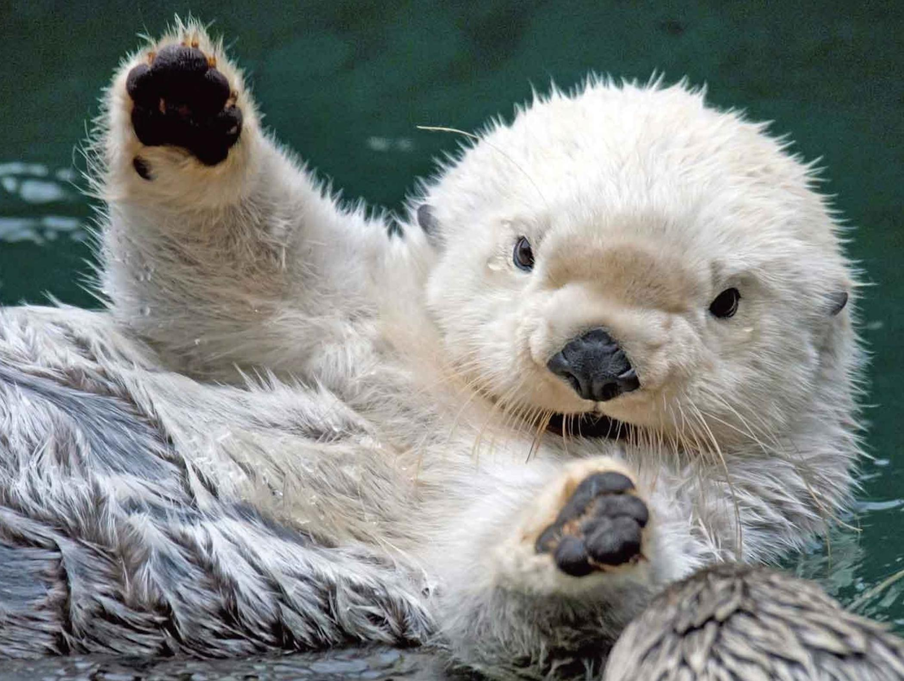
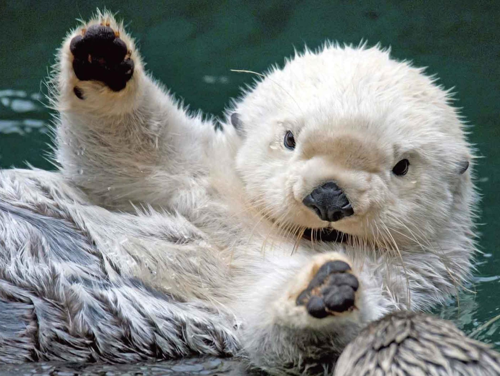

Sea otters live in coastal marine ecosystems and they live around 15-20 years. They are currently endangered due to oil pollution, predation by orcas, and poaching. Sea otters obtain their food by diving. They can sense prey using their whiskers. They like to eat sea stars, sea urchins, crabs, clams, snail, and many other animals. They are highly intelligent and social creatures. For instance, they form close bonds with members of their species. and groups known as rafts or pods when resting or sleeping.
 
